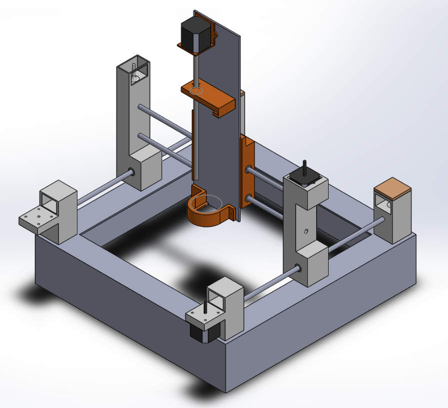

B.S. Mechanical Engineering Honors
Certification in Robotics and Mechatronics
University of Texas at Austin
Class of 2020
I am a senior undergraduate student working on controls/optimization/robotics research, advised by Dr. Mitch Pryor and Dr. Luis Sentis at UT Austin.
1. Control and Path Planning of Pseudo-Omnidirectional Non-Holonomic Wheeled Mobile Robot
Publications
Vikram Ramanathan, Andy Zelenak, and Mitch Pryor. Instantaneous Center of Rotation-Based Master-Slave Kinematic Modeling and Control. Proceedings of the ASME 2019 Dynamic Systems and Control Conference. Volume 3, Rapid Fire Interactive Presentations: Advances in Control Systems; Advances in Robotics and Mechatronics; Automotive and Transportation Systems; Motion Planning and Trajectory Tracking; Soft Mechatronic Actuators and Sensors; Unmanned Ground and Aerial Vehicles. Park City, Utah, USA. October 8–11, 2019. V003T17A005. ASME. https://doi.org/10.1115/DSCC2019-9123 [pdf]Implementation + Media
Abstract: This article presents a novel kinematic model and controller design for a mobile robot with four Centered Orientable Conventional (COC) wheels. When compared to non-conventional wheels, COC wheels perform better over rough terrain, are not subject to vertical chatter and offer better braking capability. However, COC wheels are pseudo-omnidirectional and subject to nonholonomic constraints. Several established modeling and control techniques define and control the Instantaneous Center of Rotation (ICR); however, this method involves singular configu- rations that are not trivial to eliminate. The proposed method uses a novel ICR-based kinematic model to avoid these singularities, and an ICR-based nonlinear controller for one ‘master’ wheel. The other ‘slave’ wheels simply track the resulting kinematic relationships between the ‘master’ wheel and the ICR. Thus, the nonlinear control problem is reduced from 12th to 3rd-order, becoming much more tractable. Simulations with a feedback linearization controller verify the approach.
Insert slides & informative video hereCurrent Work
Trajectory Optimization for Omni-directional Mobile Robot Given an Offset Reference Trajectory
SimulationsThis research involved the development of a Nonlinear Model Predictive Controller for an omni-directional Wheeled Mobile Robot (WMR) given some offset reference trajectory. Carrying an offset alpha radition sensor attached to one of its sides, our WMR is intended to follow a desired survey path accurately while remaining in known "contamination-free" areas and avoiding any obstacles along the way. This controller defines the robot's kinematics as a simple single integrator, formulates the obstacle avoidance problem as a quadratic constraint and optimizes over a quadratic cost function of the alpha sensor tracking error and the control input. The coordinate transformation from the robot base to the alpha sensor introduces nonlinearity into the formulation. This quadratically constrained nonlinear optimization problem is solved using Sequential Quadratic Programming (SQP). Simulations of the MPC solving a robot base trajectory given a alpha sensor trajectory demonstrate the validity of this approach.
Insert slides & informative video here2. Humanoid Footstep Planning
Pre-prints
Vikram Ramanathan, Ufuk Topcu, Luis Sentis. Footstep Planning with Encoded Linear Temporal Logic Specifications. In prep. [pdf]Media
Abstract: This article first presents an approach to encode Linear Temporal Logic (LTL) Specifications into aMixed Integer Quadratically Constrained Quadratic Program (MIQCQP) footstep planner. By addingLTL specifications to the program, we can ensure that only safe and desirable performance is achievedgivena prioriknowledge of environment behavior. We extend the MIQCQP footstep planner byencoding temporal logic specifications over the convex regions of obstacle-free space. Simulationsof the footstep planner in a 2D environment satisfying encoded LTL specifications demonstrate theresults of this research.
2D Icing Printer[Report] [Video]
 Description:
Stealthy Path Planner [Report] [Github]
Description:
Self-Powered Flow Rate Sensor [Report] [Video]
Description:
FRACTRAN Interpreter + FRACTRAN Programming [Report] [Github]
Description: loren ipsum
Fastest.World iOS Application [Github]
Description:
Graduate
CS 395T/ASE 396: Verification/Synthesis of Cyberphysical Systems (Fall '19)
ASE 381: Advanced Dynamics (Spring '19)
EE 362K: Introduction to Automatic Control (Summer '18)
ME 379M: Theory/Design of Mechanical Measurements (Spring '18)
Mechanical Engineering
ME 339: Heat Transfer (Spring '19)
ME 334+134L: Materials Engineering (Fall '18)
ME 338: Machine Elements (Fall '18)
ME 335: Engineering Statistics (Fall '18)
ME 330+130L: Fluid Mechanics (Spring '18)
ME 344+144L: Dynamic Systems and Control (Spring '18)
EM 319: Mechanics of Solids (Spring '18)
ME 318M: Programming and Engineering Computational Methods (Fall '17)
ME 314D: Dynamics (Fall '17)
ME 340+140L: Mechatronics (Summer '17+Fall '17)
ME 333T: Engineering Communication (Spring '17)
ME 316T: Thermodynamics (Spring '17)
EM 306: Statics (Spring '17)
Mathematics
M 328K: Introduction to Number Theory (Spring '19)
M S325K: Discrete Mathematics (Summer '18)
M 362K: Probability I (Summer '18)
M 427L: Advanced Calculus for Applications II (Fall '17)
M 427J: Differential Eqns with Linear Algebra (Spring '17)
M 340L: Matrices and Matrix Calculations (Fall '16)
M 408D: Multivariate Calculus Honors (Fall '16)